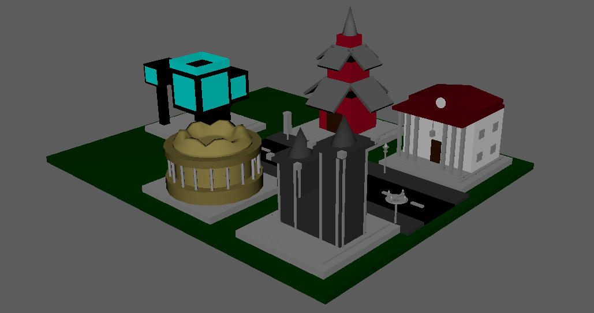
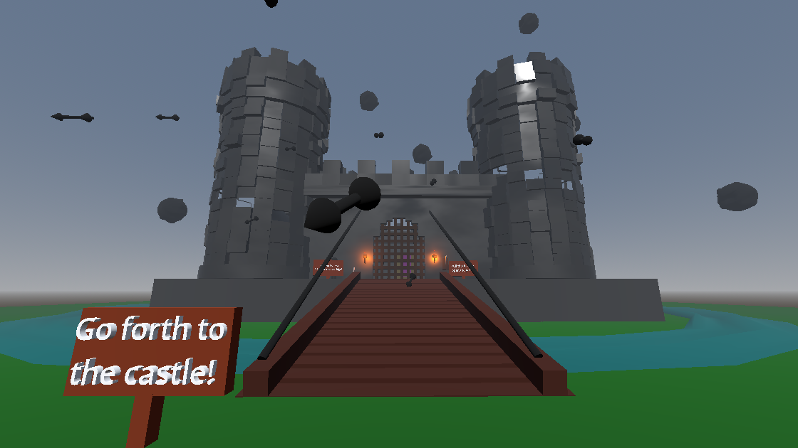

This model was created in Autodesk Maya, and it is an early 3d challenge I took on to mimic different architectural styles. The initial goal was to make the styles detailed enough to be instantly recognizable, and the biggest struggle when it came to that was using rounded sculpting for the first time.

This is an interactive scene created in the Godot engine with looping animations and level manipulation mechanics. It was made mainly with Godot's built in systems, with some models being modeled in Maya before importing. The aim was to make a convincing battlefield scene with the limitation of not yet learning about NPC development.